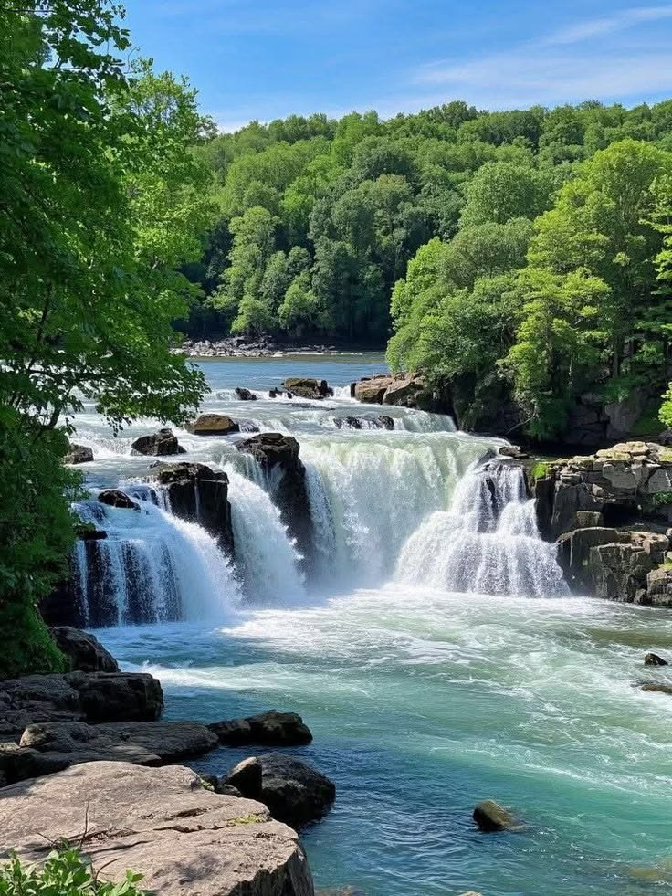

Nature
The world has secrets.

Where water meets the wild...
There is something almost unreal about a waterfall.
Water that once moved quietly through rivers and streams suddenly drops over cliffs, carving its way through rock and shaping the landscape around it.
But waterfalls are more than beautiful scenery.
They are part of living ecosystems, creating habitats for plants, insects, fish, birds, and other organisms that depend on the constant movement of water.
Look a little closer... 👀
Some waterfalls exist in places that are difficult to reach, hidden deep inside forests, mountains, and canyons.
Others change dramatically with the seasons. A waterfall that looks powerful during heavy rainfall can become a gentle stream during a dry season.
And over incredibly long periods of time, falling water can help shape the rocks and landscapes around it.
💡 Did you know?
A waterfall isn't necessarily a permanent feature.
Changes in rainfall, erosion, earthquakes, and the movement of rivers can alter a waterfall's shape or even cause it to disappear.
Nature is constantly changing.
Sometimes, you just have to slow down long enough to notice.